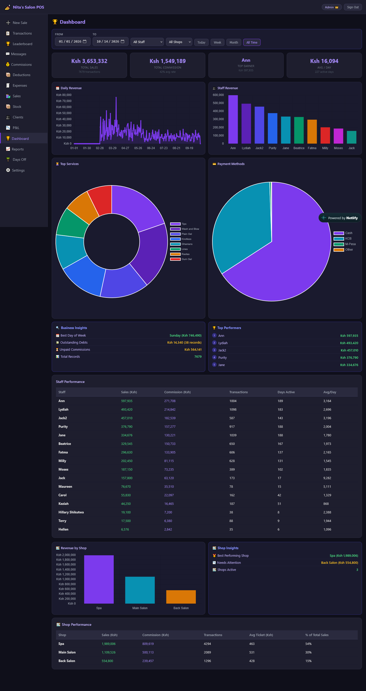
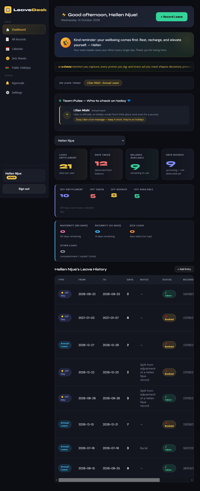
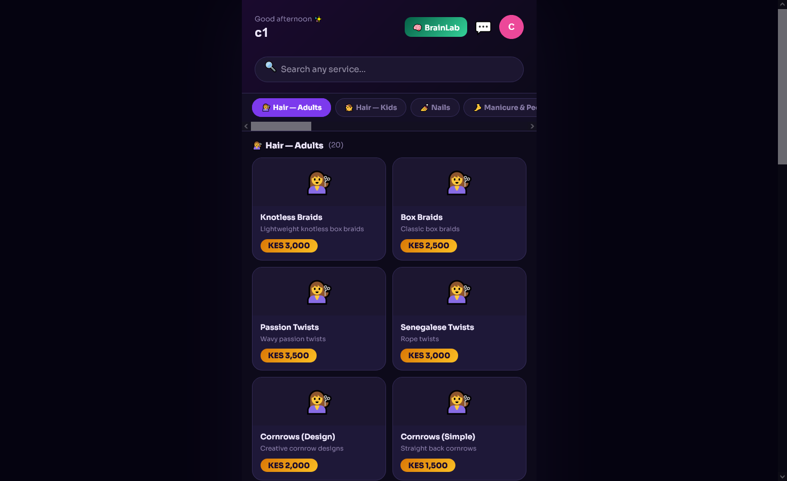

Featured Engineering Projects
Here is a look at the real-world software applications I am developing as I learn full-stack web engineering:
1. Nitas POS (Point-of-Sale System)
A practical retail business management application built to track sales, product inventory, and daily customer balances. Inspired by my hands-on experience running operations for our family business, this system handles core transactional logic cleanly and efficiently.

2. Corporate Leave Days Tracker
A workplace administrative dashboard optimized for tracking employee time-off metrics. It automates internal staff submission workflows, prevents date overlap issues, and provides a clean, easy-to-read summary panel for managers reviewing leave histories.

3. WorkTap Web Application
A secure, project-driven workspace architecture designed to monitor background database tasks and streamline local development infrastructure. It focuses heavily on process flow design, error reduction, and workflow automation.
